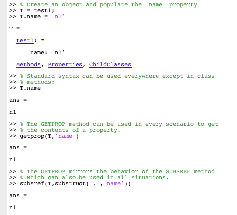

| On this page… |
|---|
Although the HDS Toolbox is developed to minimize unintuitive syntax, there are a couple of situations in which the behavior of the database is different than one might expect. These issues are rooted in some limitations that MATLAB imposes on object oriented programming. It is important that anybody developing and using the HDS Toolbox understands the following issues as they affect the treatment of data in the database.
The main functionality of the HDS Toolbox is based on changing the way that properties are accessed during reading and writing from/to the object. This is realized by overloading the SUBSREF and SUBSASGN methods for all objects of class HDS. These methods automatically get called when you access a property in an object (i.e. Object1.property ). For some reason, MATLAB decided that this behavior should be ignored in class methods. In class methods, accessing properties using this syntax will utilize MATLAB's internal methods. This will result in unwanted behavior of the HDS Toolbox without throwing a noticeable error.
To force MATLAB to use the overloaded methods for accessing data, one should explicitly use the SUBSREF and SUBSASGN methods in class methods. Information on how to use these methods can be found in the MATLAB manual. The HDS Toolbox has two method implemented which simplify this situation. If you are getting or setting a property in the current object, you can use the GETPROP and SETPROP methods instead of the SUBSREF and SUBSASGN methods. Below shows how the three indexing methods relate, note that the first method ('.'-method) should not be used in class methods:

This example is similar using the different methods for setting object properties as shown by the following example:
The HDS Toolbox aims to mimic the behavior of the standard MATLAB structures from a user point of view. Due to restrictions imposed by MATLAB, it is not possible to return more outputs than the number of inputs when accessing objects. This is reflected when the user tries to access a property from an array of objects located in a certain property of an object. Instead, the HDS Toolbox will return a single cell array with the contents for each object in a single cell. However, direct accessing multiple properties in an array of objects works as expected.
In summary, indexing property values in an array of objects behaves exactly the same as in structures as long as the array is directly accessed. When the array is accessed as being a property of a parent object, the HDS toolbox will always return the values embedded in a cell-array. MATLAB knows about this problem and a better solution is submitted as a feature request.
|
|
Product Overview | Acknowledgements |
|
© 2009-2011 J.B.M. Wagenaar • Terms of Use • Acknowledgments